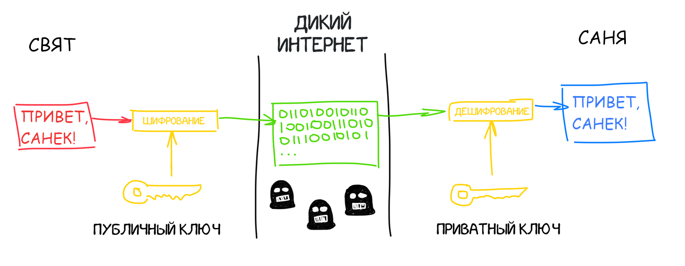

 Мы находимся в децентрализованном интернете, где никому нельзя доверять. Транзакция подписывается приватным ключом и вместе с публичным ключом отсылается в специальное хранилище — пул неподтвержденных транзакций. Так любой участник сети может проверить, что именно вы были её инициатором, а не кто-то еще хочет расплатиться вашими деньгами.
Этим достигается открытость и безопасность сети. Если раньше за это отвечали банки, то в блокчейне за это отвечает математика.
Ваш публичный ключ и является номером крипто-кошелька. То есть вы можете завести кошелек любой криптовалюты вообще не выходя в сеть.
Простым пользователям, не желающим разбираться как выпускать и хранить приватные ключи, помогут сервисы онлайн-кошельков. Чтобы копировать длинные публичные ключи, там делают удобные QR-коды.